סרט הפתיחה לכנס הזכיינים, 1.1.2027
ככה ייפתח הסרט שלכם. מומלץ לצפות עם סאונד.
שלוש שנים של מלחמה. טילים מאיראן, אזעקות בתל אביב ובראשון לציון. ובכל בוקר, הזכיינים פתחו את הביתנים. הם היו תחת אש ונתנו את כל כולם.
מה שנראה כמו משימה בלתי אפשרית, הם הפכו לאפשרית. לכן הסרט שלנו מוחק את המילה "בלתי".
בסרט הזה הזכיינים הופכים לגיבורים של המערכה:
כל גיבור מוצג על המסך עם השם שלו, כמו סוכן אמיתי בתיק מבצעי. זה הרגע שבו האולם יזהה את החברים שלו.
פתיחה של סרט ריגול. שקט מאיים לפני הסערה.
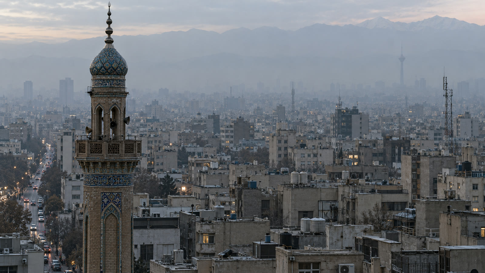
טהרן בשחר. העיר שקטה, ההרים מאחור באובך.
01 · EXT · DAWN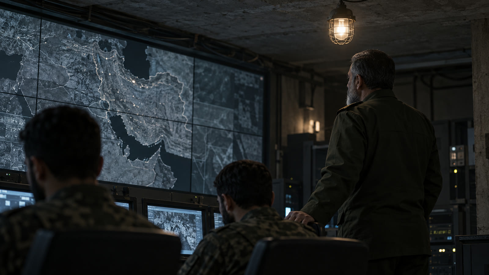
בחמ"ל של משמרות המהפכה מתקבלת ההחלטה: לתקוף את ישראל.
02 · INT · NIGHTבתוך החמ"ל יושב אחד משלנו.
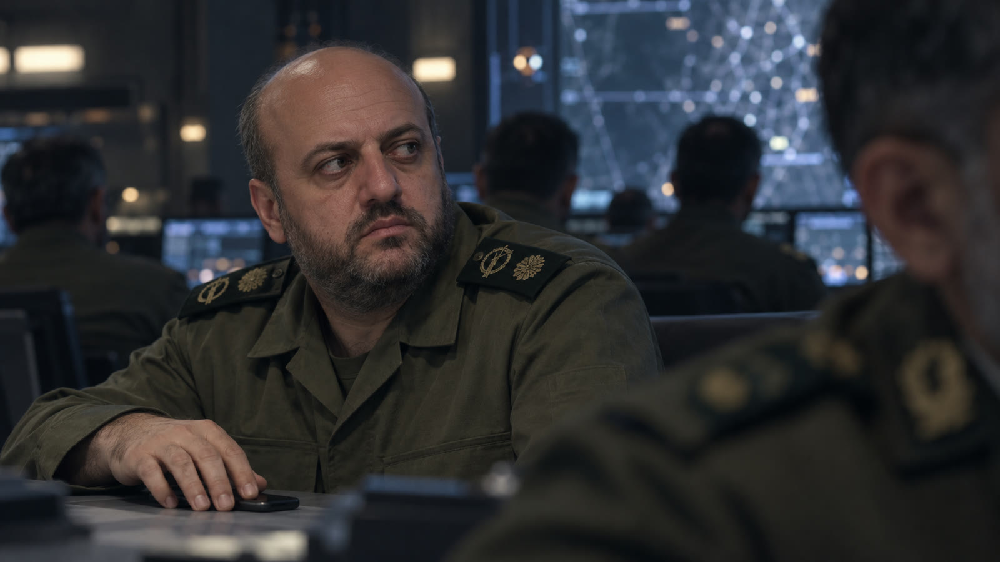
כולם מסתכלים על המסך. רק הוא מעביר מבט הצידה, וההודעה יוצאת.
03 · INT · NIGHT סוכן המוסד: יבגני בליאכר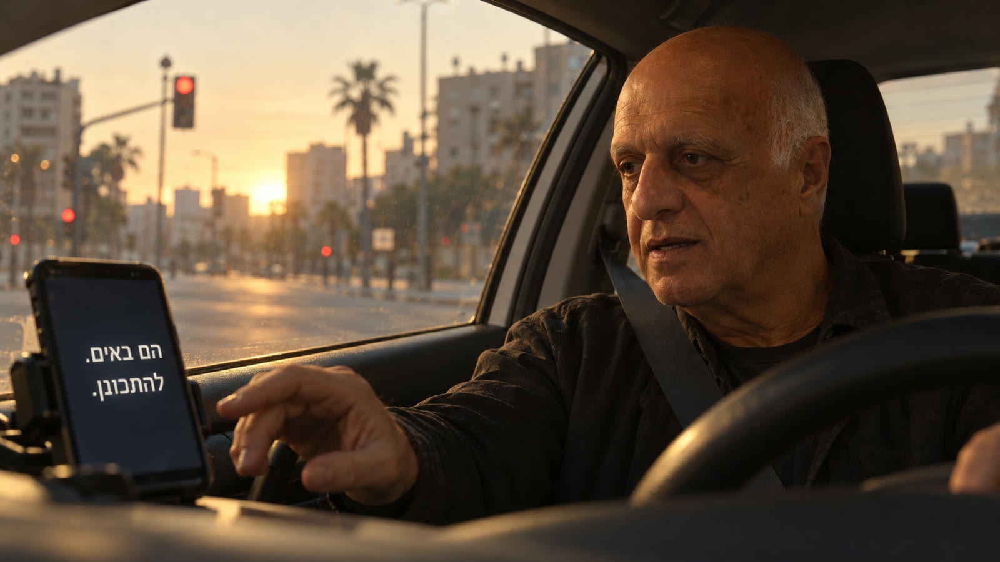
5:30 בבוקר בגוש דן. ההודעה מגיעה: "הם באים. להתכונן."
04 · INT CAR · DAWN מקבל ההודעה: שאול בנימיןכל אחד יוצא לעמדה שלו.
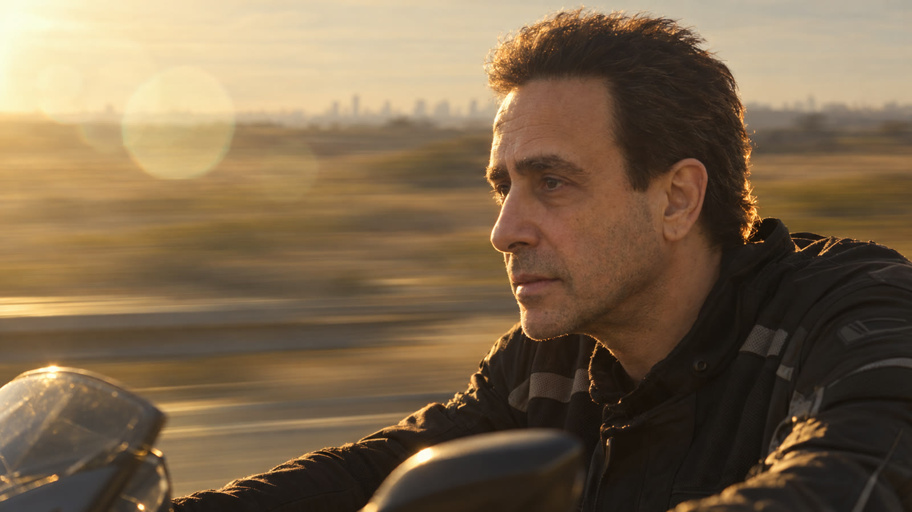
לא בורחים. נוסעים לקראת.
05 · EXT ROAD · SUNRISE על האופנוע: עופר סיני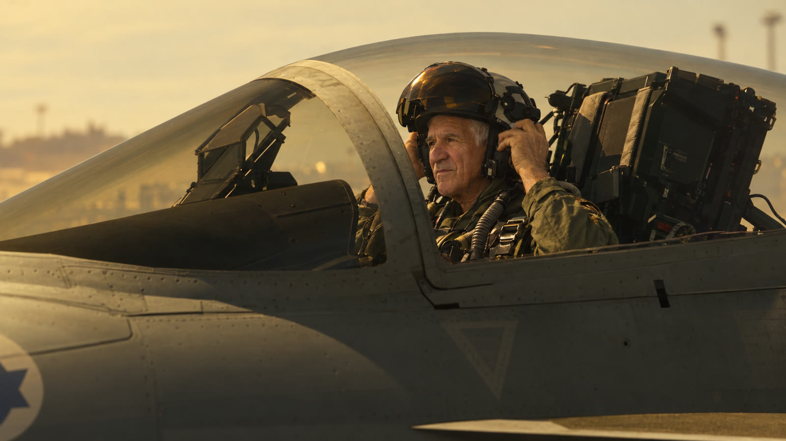
הטייס הוותיק בטייסת חובש קסדה. הוא עשה את זה אלף פעם.
06 · EXT AIRBASE · SUNRISE הטייס: ראובן לואישוילי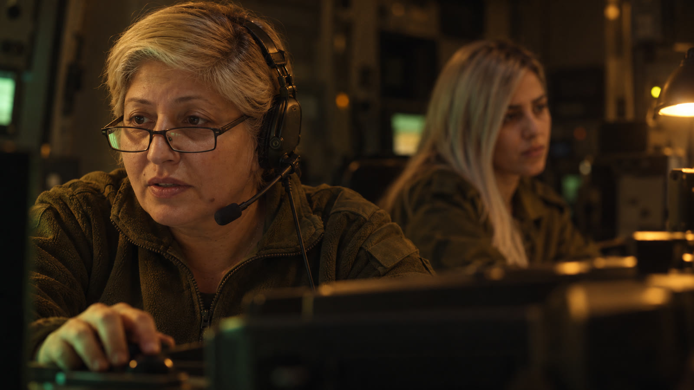
סוללת כיפת ברזל. המפעילה הכי מנוסה בחדר, ולידה הדור הבא.
07 · INT · PRE-DAWN המפעילות: ליאורה בן שיטרית ואלין אבן כהן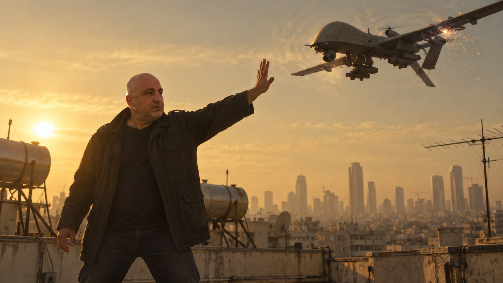
על גג בתל אביב, יד אחת עוצרת רחפן באוויר.
08 · EXT ROOF · SUNRISE עוצר הרחפן: עופר שבת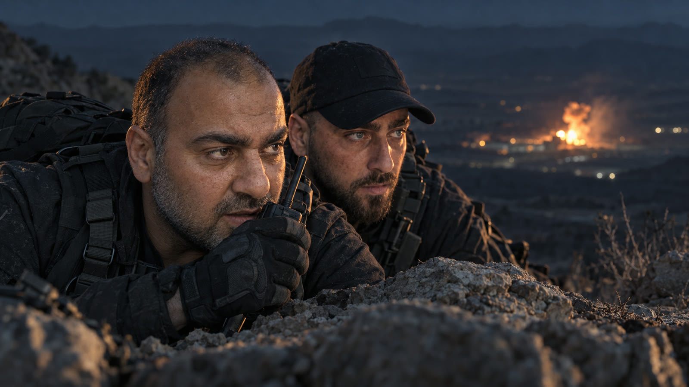
עמוק בתוך איראן. המשגר מושבת לפני שהספיק לשגר.
09 · EXT RIDGE · NIGHT הלוחמים: אמיר דרור ושמואל שקדהשיא של הסרט.
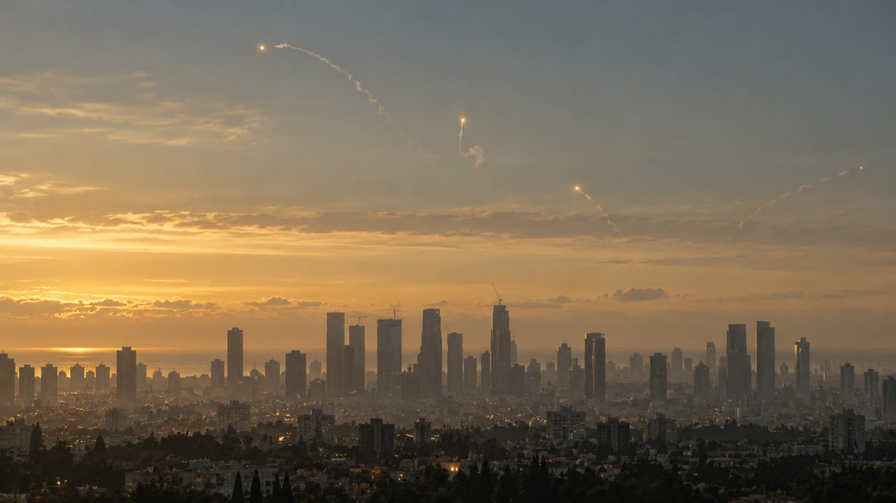
המטח בשמי גוש דן. כל טיל מיורט, והעיר נשארת שלמה.
10 · EXT CITY · DAWNהגיבורים האמיתיים.
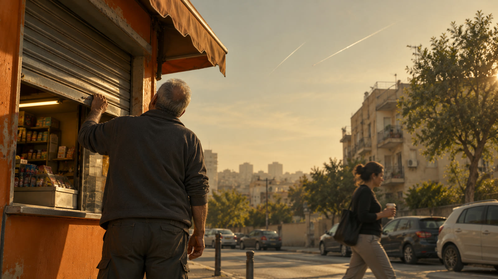
בוקר. התריס עולה. חוזרים לזכיינים בשגרה, וקול מודה לצוות ולזכיינים על העבודה הקשה ועל התרומה לחוסן הלאומי.
11 · EXT STREET · MORNINGהסרט ייבנה בשפה של קולנוע אמיתי: עבודת מצלמה, עדשות, תאורה, צבע וסאונד ברמה של סרט אקשן הוליוודי. הזכיינים לא יראו את עצמם בסרטון. הם ירגישו שהם היו חלק מסרט.